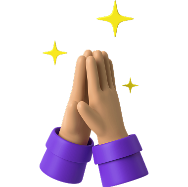

Missão
Facilitar conexões solidárias e tornar pedidos e ofertas de ajuda mais simples de encontrar.
O Apoio Social conecta pessoas em busca de ajuda. Com uma comunidade acolhedora, você pode compartilhar experiências e se conectar com voluntários prontos para ajudar.
ENCONTRE AQUI O QUE VOCÊ PRECISA
O Mão Amiga nasceu para tornar apoio social mais acessível, humano e direto. A nova identidade do site parte exatamente da linguagem visual desta página inicial: leve, acolhedora, moderna e com bastante espaço em branco.
Facilitar conexões solidárias e tornar pedidos e ofertas de ajuda mais simples de encontrar.
Construir uma experiência digital acolhedora, confiável e acessível para diferentes comunidades.
Empatia, respeito, cooperação, transparência e compromisso com quem precisa de apoio.